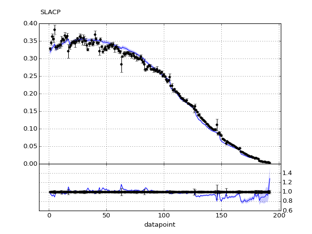
Return to Index
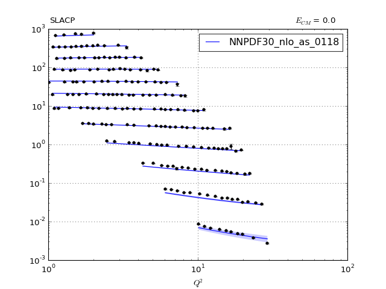
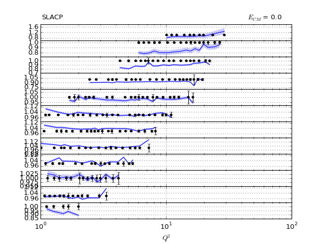
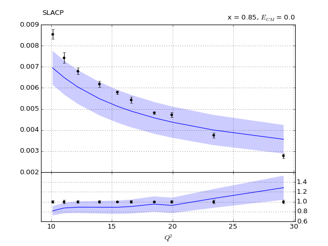00" title="" /> 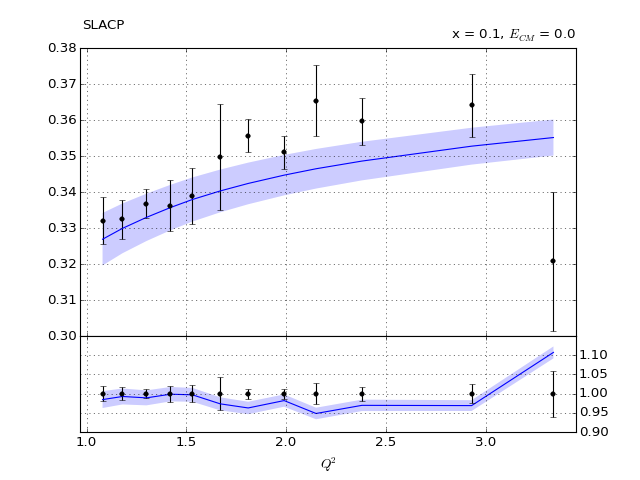100" title="" /> 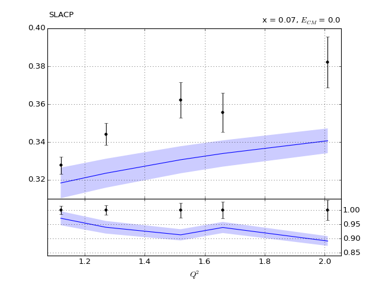110" title="" /> 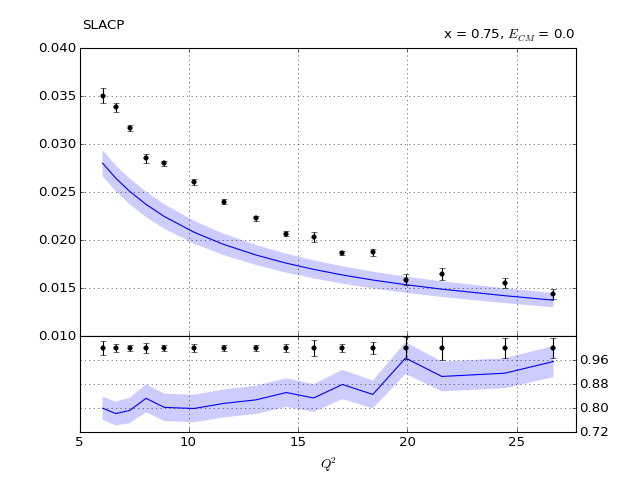10" title="" /> 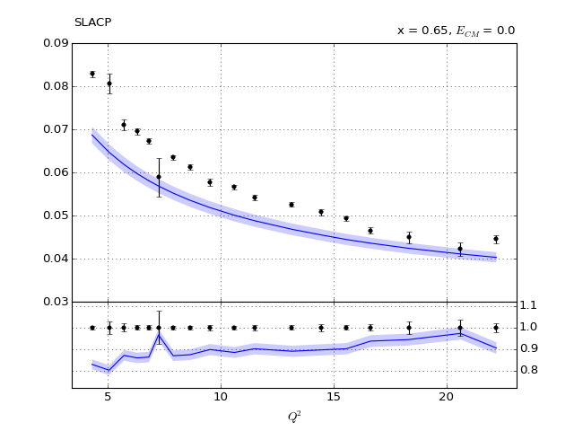20" title="" /> 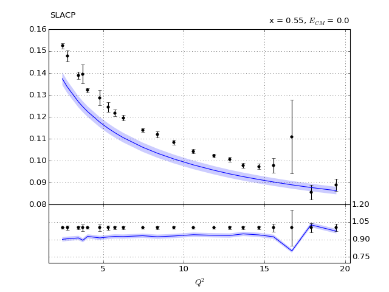30" title="" /> 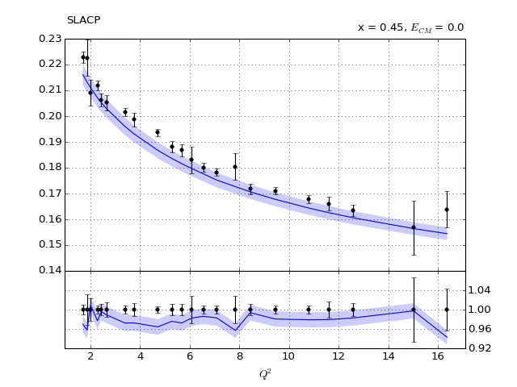40" title="" /> 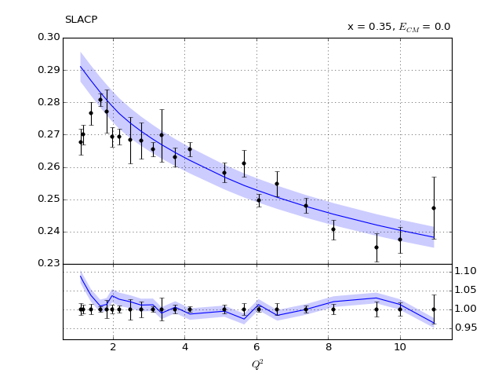50" title="" /> 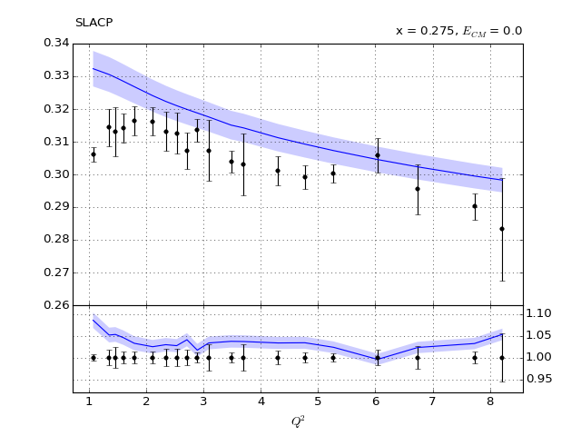60" title="" /> 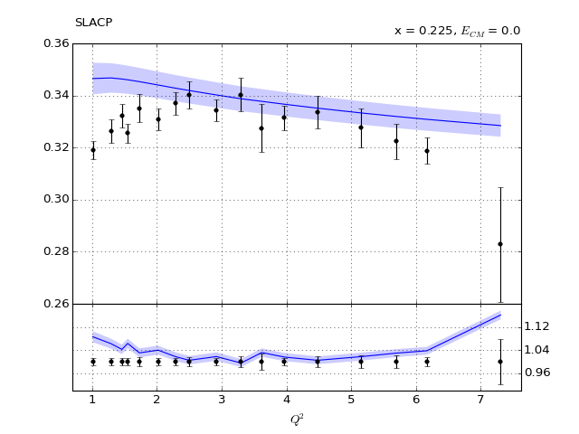70" title="" /> 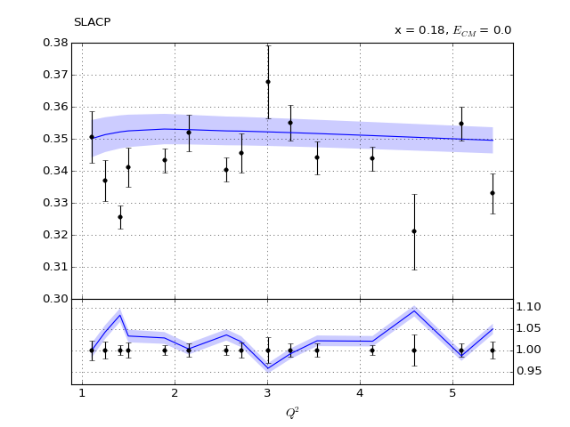80" title="" /> 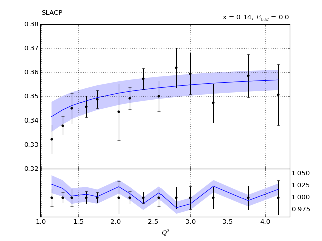90" title="" />